Promoter and RBSComposite
PtagC+RBS
Sequence-confirmed L1
A promoter and a ribosome binding site delivered as one kit part, so transcription and translation of the gene behind it are set together. Kit entry STK035.
No registry number yet
On this page
ReLeaf puts a plant protectant behind a green-light switch in Bacillus subtilis. Getting from a lamp to a secreted protein takes four things to happen in order, and the collection is organised as those four things plus a fifth that lets us test the cargo on its own.
Four of the five modules were joined into one plasmid at Level 2 on 1 September. The detail of every part lives on the Registry, and the evidence behind each status word is folded into the build record at the foot of this page.
Every card carries one of six words, and a part gets the highest word it has earned. The small tag after the word says at which assembly level it earned it: L0 for an entry part, L1 for a transcription unit, L2 for the joined circuit.
The words are the build spreadsheet's own states, not a scale we invented for the wiki: the Level 0 sheet records plasmid, glycerol stock, PCR product, TA cloning, enzyme digestion and sequencing as separate columns, the Level 1 sheet records an assembly status and a colony PCR length, and the sequencing file records a colony number and a date.
A sequence exists and in most cases a synthesis plasmid exists, and no bench step after that is recorded. In the Level 0 sheet these rows read not started
across every column.
The part is in an entry plasmid. PCR, gel, clean-up and TA cloning are recorded, and either the digest or the sequencing read is still missing.
The transcription unit went into its destination vector and gave colonies. The Level 1 sheet writes this as Assembly
, meaning under way and not yet confirmed.
A colony PCR or a restriction digest returned the expected band. The construct is the right size and the junctions are where they should be. Nobody has read it.
A named colony and a sequencing date, both recorded in sequencing positive clone.docx. This is the only word on the page that means somebody read the DNA back.
The build record marks it failed. Three Level 1 assemblies carry this word, and all three are disputed by later gels; they are named under contested assemblies.
There is a seventh rung the collection does not reach in a way we can attribute. B. subtilis 168 takes the shuttle vector between 2.0 and 2.3 kV, and the transformation counts are on the Engineering page, but the archive nowhere records which cargo-bearing plasmid was in which transformant. So no individual part on this page is marked as being in B. subtilis, and the one protein-level signal we have, a single band at roughly 41 kDa on the 24 August blot, cannot be assigned to a named part either.
This module supplies the chromophore the light sensor needs. The ho1 and pcyA genes are carried as a single fused operon: heme oxygenase-1 opens the cell's endogenous heme ring, and phycocyanobilin:ferredoxin oxidoreductase reduces the product to phycocyanobilin. Without that molecule the CcaS photoreceptor is apoprotein and green light does nothing at all, which is why this module sits first in the chain even though it is not the part that senses anything.
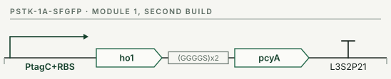
Promoter and RBSComposite
Sequence-confirmed L1
A promoter and a ribosome binding site delivered as one kit part, so transcription and translation of the gene behind it are set together. Kit entry STK035.
No registry number yet
Chromophore biosynthesis operonBasic
Sequence-confirmed L1
Heme oxygenase-1 fused to phycocyanobilin:ferredoxin oxidoreductase through a (GGGGS)×2 linker, the two enzymes that make phycocyanobilin from heme.
TerminatorBasic
Sequence-confirmed L1
A strong synthetic Rho-independent terminator from the Chen synthetic terminator library [3], chosen here because it is recombination resistant. Kit entry STK077.
No registry number yet
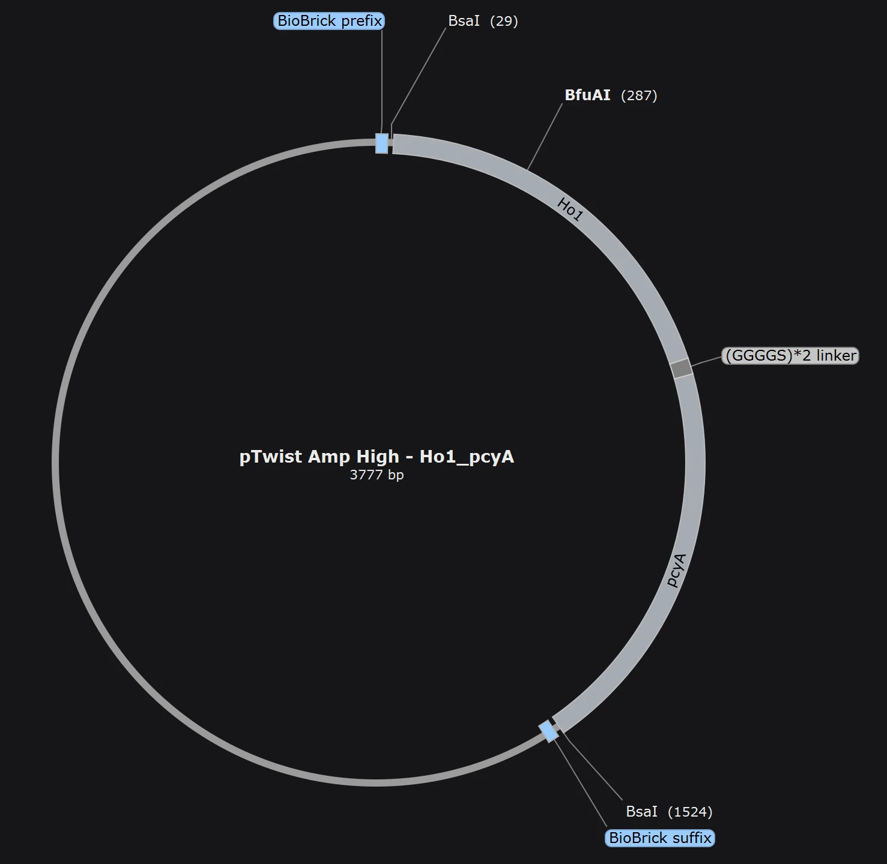
The Level 0 entry clone is pGEM-Teasy-Ho1-pcyA, clone #F1, complete through sequencing. The Level 1 unit is assembly A, colonies A1, A2 and A3, colony PCR at 1,833 bp on 30 July and sequenced on 31 July. This module was built twice; the first version sat behind Pveg and RBS0, sequenced clean and gave no expression signal, and the rebuild on PtagC and L3S2P21 is the one on the cards. That history is on the Engineering page.
CcaS-m3 is a miniaturised variant of the cyanobacterial CcaS histidine kinase. With phycocyanobilin bound, green light drives it to autophosphorylate and to pass the phosphoryl group to CcaR. We built it behind two constitutive promoters of different strength, PliaG and PlepA, because the useful dynamic range of a two-component system depends on how much sensor is sitting in the cell, and we had no way to predict which level would work in our hands.
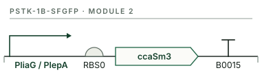
Constitutive promoterBasic
Sequence-confirmed L1
A constitutive B. subtilis promoter from the lepA region. The kit files it as low expression. Kit entry STK029, from BioBrick Box 2.0.
Constitutive promoterBasic
Sequence-confirmed L1
A weak constitutive B. subtilis promoter giving low-level baseline transcription. Kit entry STK030, from BioBrick Box 2.0.
RBSBasic
Sequence-confirmed L1
A synthetic ribosome binding site described as very strong in B. subtilis [4]. Here it sets translation initiation of the CcaS-m3 photoreceptor. Kit entry STK204.
No registry number yet
PhotoreceptorBasic
Sequence-confirmed L1
The miniaturised optogenetic variant of CcaS from the cyanobacterial CcaS/CcaR system. Under green light it autophosphorylates and transfers the phosphoryl group to CcaR [1].
No registry number yet
TerminatorBasic
Sequence-confirmed L1
A double terminator, very strong in B. subtilis, that stops read-through out of this module into the next one. Kit entry STK070.
No registry number yet
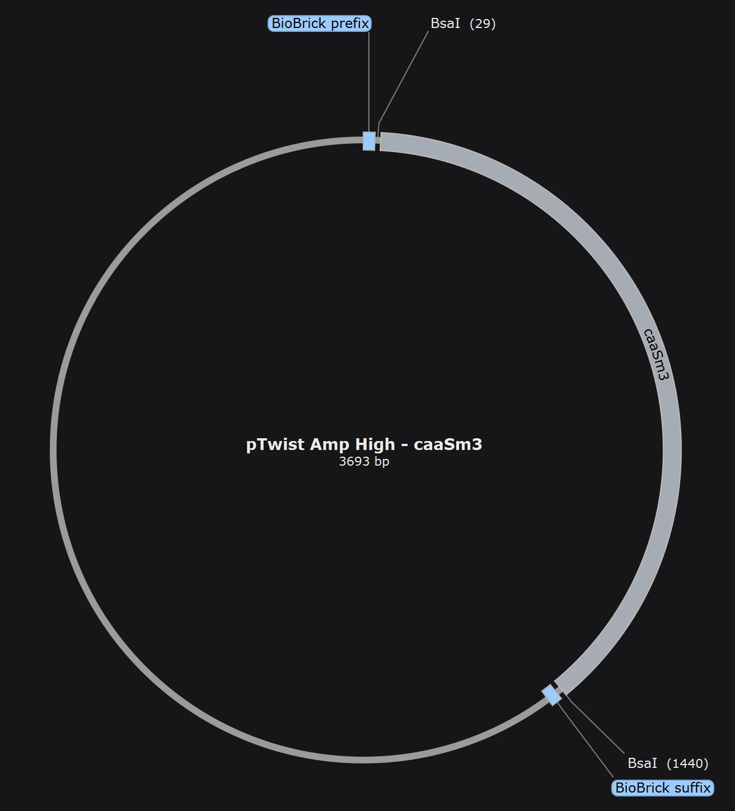
caaSm3; see P12.
Level 0 for ccaS-m3 is complete through sequencing. Both Level 1 units were confirmed: assembly B on PliaG, colony B2, colony PCR 24 June and sequenced 3 July, and assembly C on PlepA, colonies C6 and C9, colony PCR 22 July and sequenced 24 July. Which of the two promoters gives a better switch is not known, because the comparison needs an induction measurement and there is not one.
CcaR is the response regulator half of the pair, an OmpR-class protein that accepts the phosphoryl group from activated CcaS-m3 and then activates transcription from PcpcG2. It is the piece that turns a phosphorylation event into a promoter firing, and it is deliberately on a constitutive promoter of its own so that the amount of regulator in the cell does not itself depend on the light.
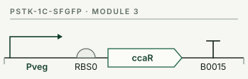
Constitutive promoterBasic
Sequence-confirmed L1
A constitutive promoter from B. subtilis that transcribes continuously with no inducer. See P1: the kit entry we actually used, STK028, is a different accession and a different sequence.
RBSBasic
Sequence-confirmed L1
The same very strong synthetic ribosome binding site [4], here setting translation initiation of the CcaR response regulator. Kit entry STK204.
No registry number yet
Response regulatorBasic
Sequence-confirmed L1
An OmpR-class response regulator. It takes phosphate from activated CcaS and activates transcription from the light-responsive promoter PcpcG2 [1].
TerminatorBasic
Sequence-confirmed L1
A double terminator stopping read-through past the response regulator into the module after it. Kit entry STK070.
No registry number yet
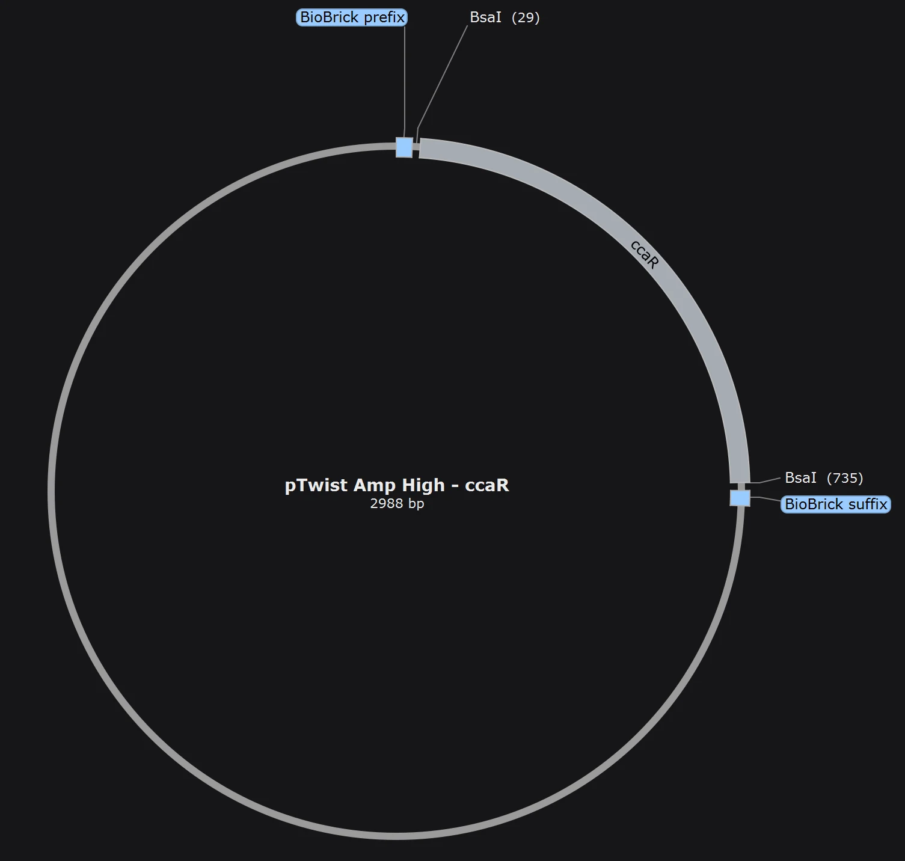
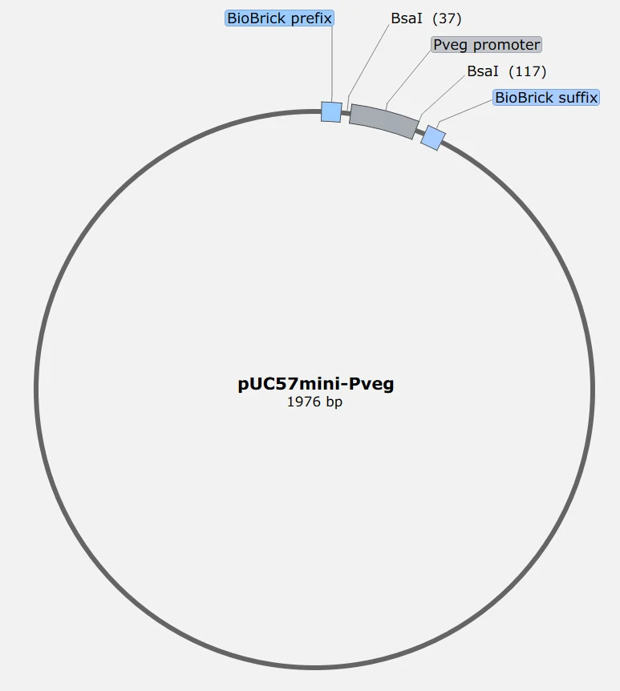
Level 0 for ccaR is complete through sequencing. The Level 1 unit is assembly D, 3,243 bp, colony PCR 26 June and sequenced 1 July. It was the first module in the collection to be finished.
This is the output stage. PcpcG2-veg is a chimera: the cyanobacterial CcaR-responsive promoter with B. subtilis promoter features grafted on so that the host's own polymerase will read it. Behind it sits EEBD-RBS0, and behind that a secretion peptide fused to whichever protectant is being tested. Several cargoes went through the slot, and they are the reason this module carries nine cards: the promoter, the ribosome binding site and the terminator are shared, and only the cassette changes.
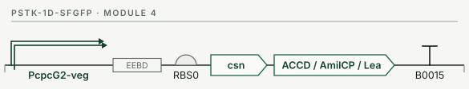
Light-responsive promoterBasic
Sequence-confirmed L1
A chimeric promoter built from the cyanobacterial CcaR-responsive element and B. subtilis promoter features, for optogenetic control of what sits behind it [1, 2].
No registry number yet
RBSComposite
Sequence-confirmed L1
RBS0 with an E. coli expression blocking device in front of it: a B0015 terminator between two recombination sites, which keeps the gene silent while the plasmid is being built in E. coli and recombines out in B. subtilis. Kit entry STK207.
No registry number yet
Functional gene cassetteComposite
Sequence-confirmed L1
ACC deaminase, which degrades 1-aminocyclopropane-1-carboxylate, the immediate precursor of ethylene, so that a stressed plant makes less of the hormone that tells it to stop growing. Fused to the Csn N-terminal signal peptide for export.
No registry number yet
Functional gene cassetteComposite
Designed
The same enzyme behind the SamyQ signal peptide instead of Csn. The wild-type version of this cassette appears in no colony list and has no sequencing date; only the v2t1 mutant below was built.
No registry number yet
Functional gene cassetteComposite
Sequence-confirmed L1
ACC deaminase with 12 of the first 15 codons synonymously recoded to improve the mRNA secondary structure of the translation start site, behind the SamyQ signal peptide. Level 0 clone #QD2 on 20 August; Level 1 in both the constitutive and the light-gated context.
No registry number yet
Functional gene cassetteComposite
Sequence-confirmed L1
LEA14, an intrinsically disordered protein that can help plants stabilise cellular membranes under drought, salinity, heat and osmotic stress, with the first 15 codons synonymously recoded and the SamyQ signal peptide in front.
No registry number yet
Functional gene cassetteComposite
Designed
BoPep4, a C-terminally encoded plant elicitor peptide from broccoli, behind the SamyQ signal peptide. The wild type has a design file and no colony.
No registry number yet
Functional gene cassetteComposite
Designed
A truncated fragment of the peptide, fused to SamyQ. Cutting the peptide down is meant to lower the molecular weight enough to improve tissue entry. See P3: two of our own files disagree about where the truncation starts.
No registry number yet
TerminatorBasic
Sequence-confirmed L1
A double terminator closing the cassette, so transcription does not run past the protectant. Kit entry STK070.
No registry number yet
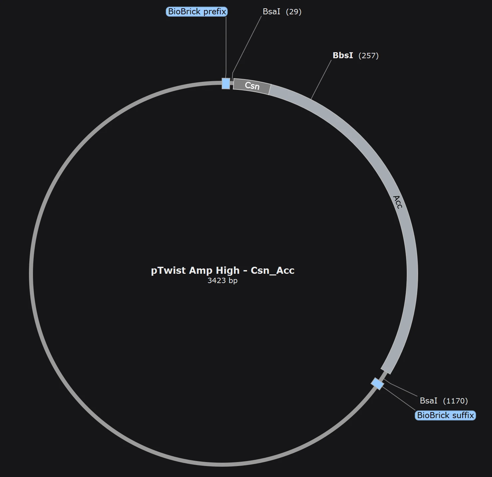
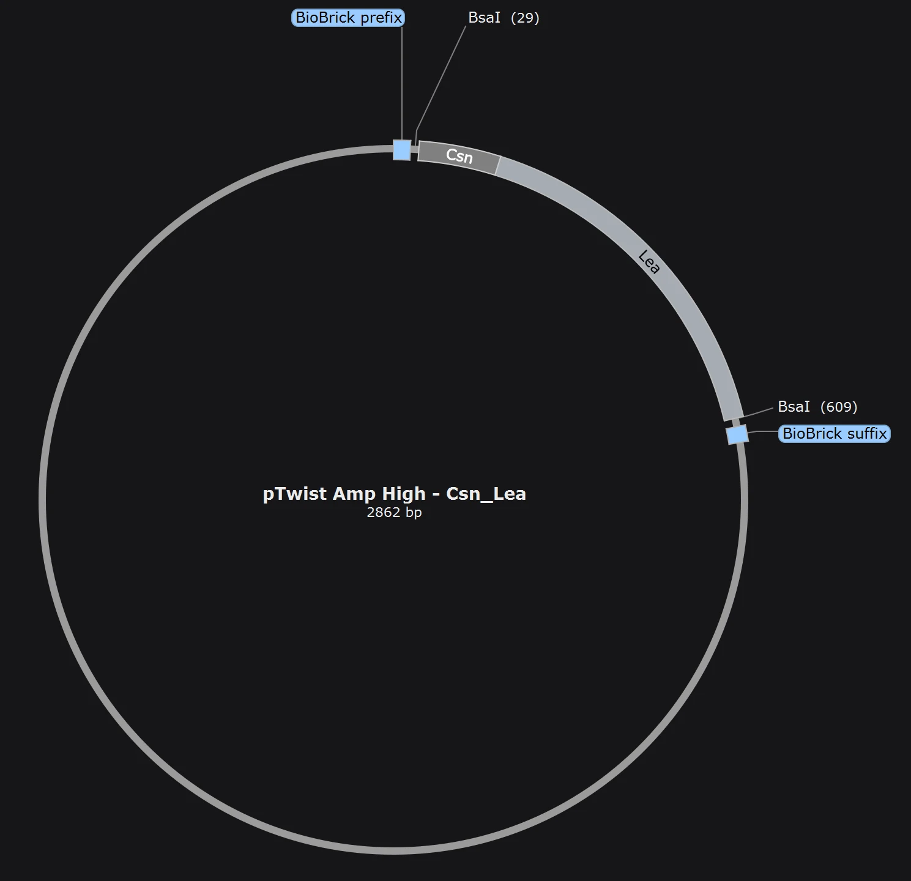
The light-gated ACC deaminase unit is assembly I, 3,757 bp, colony PCR 27 July and sequenced 28 July from colonies I3 and I6. The light-gated LEA unit is assembly G, and it is one of the three that failed. The light-gated mutant ACC deaminase unit is assembly Q, colonies Q2, Q3 and Q15, sequenced 3 September, which makes it the most recent confirmed construct in the collection.
Same cargoes, constitutive promoter, shuttle vector. The point of this module is diagnostic. A construct that has to be induced by light before it makes anything gives a negative protectant result two possible causes, the switch or the cargo, and with no induction curve there is no way to tell them apart. Putting each cargo behind Pveg in pSTK-EXP-1-sfGFP, which replicates in both E. coli and B. subtilis, removes one of the two.

Constitutive promoterBasic
Sequence-confirmed L1
The constitutive promoter that replaces the light gate in this module, so the cargo can be tested on its own. Accession disputed, see P1.
RBSComposite
Sequence-confirmed L1
The blocking device and ribosome binding site described above. It matters more here than in the light-gated module, because a constitutive promoter would otherwise express the cargo throughout the E. coli cloning. Kit entry STK207.
No registry number yet
Functional gene cassetteComposite
Sequence-confirmed L1
ACC deaminase behind the Csn signal peptide, the cargo carried furthest in the project. Assembly J, colony J9, sequenced 28 July.
No registry number yet
Functional gene cassetteComposite
Designed
The wild-type enzyme behind the SamyQ signal peptide. Designed and not built.
No registry number yet
Functional gene cassetteComposite
Sequence-confirmed L1
The recoded deaminase behind SamyQ. Assembly P, colonies P2 and P7, sequenced 26 August.
No registry number yet
Functional gene cassetteComposite
Sequence-confirmed L1
LEA behind the Csn signal peptide. Level 0 clone #S16 on 20 August, assembly R, colonies R2 and R5, sequenced 26 August. Spelling inconsistent across our sources, see P4.
No registry number yet
Functional gene cassetteComposite
Sequence-confirmed L1
The recoded LEA behind SamyQ. Level 0 clone #QA1 on 20 August, assembly S, colonies S5 and S11, sequenced 3 September.
No registry number yet
Functional gene cassetteComposite
Designed
The wild-type elicitor peptide behind SamyQ. It has a design file and appears in the sequencing record with no colony and no date.
No registry number yet
Functional gene cassetteComposite
Sequence-confirmed L0
BoPep4 with 9 of the first 15 codons synonymously recoded to open the translation start site. Level 0 colonies V4 and V19, sequenced 19 August. The Level 1 assembly, labelled N, has no colony and no sequencing date.
No registry number yet
Functional gene cassetteComposite
Sequence-confirmed L0
A second recoding of the same peptide, with 8 of the first 15 codons changed. Level 0 colony V7, sequenced 19 August. The Level 1 assembly, labelled O, has no colony and no sequencing date.
No registry number yet
Functional gene cassetteComposite
Designed
The truncated peptide behind SamyQ. Designed and not built. Truncation boundary disputed, see P3.
No registry number yet
Functional gene cassetteComposite
Designed
A single alanine substitution at position 15 of the peptide. Designed and not built.
No registry number yet
Functional gene cassetteComposite
Designed
A single alanine substitution at position 17. Designed and not built.
No registry number yet
TerminatorBasic
Sequence-confirmed L1
The double terminator closing every cassette in the module. Kit entry STK070.
No registry number yet
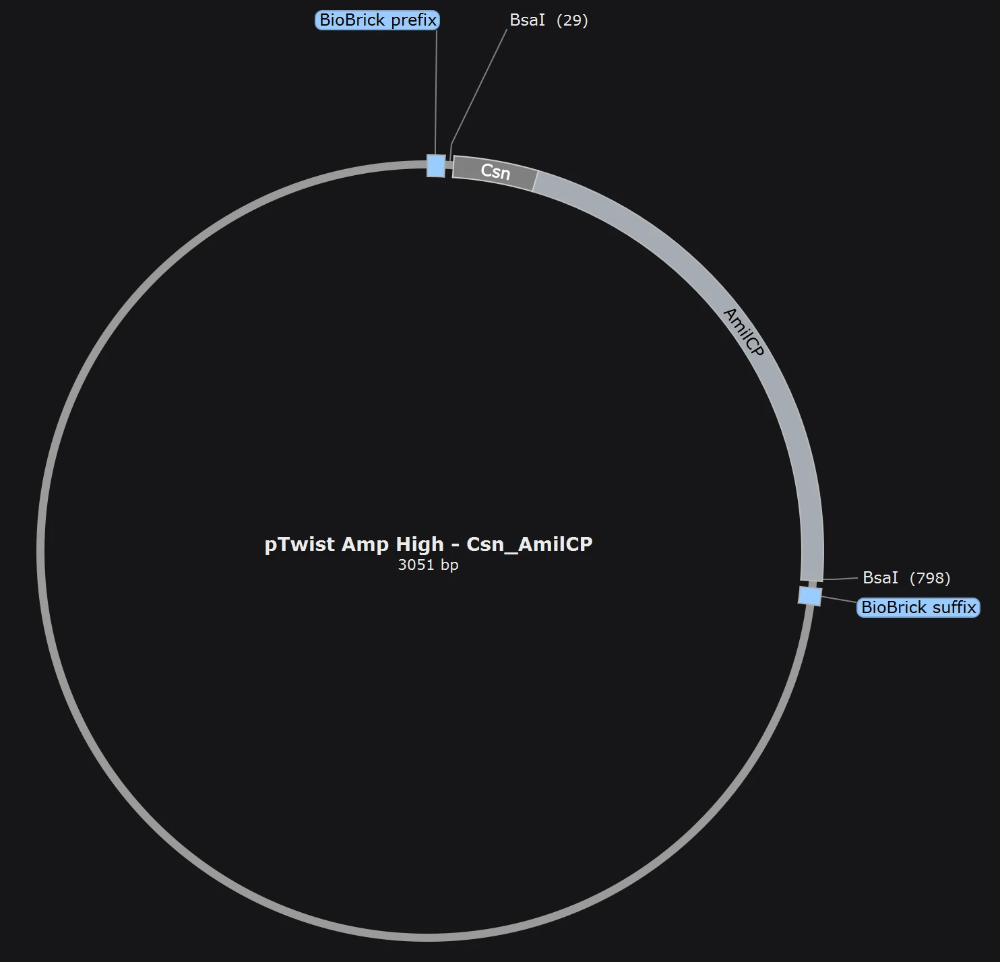
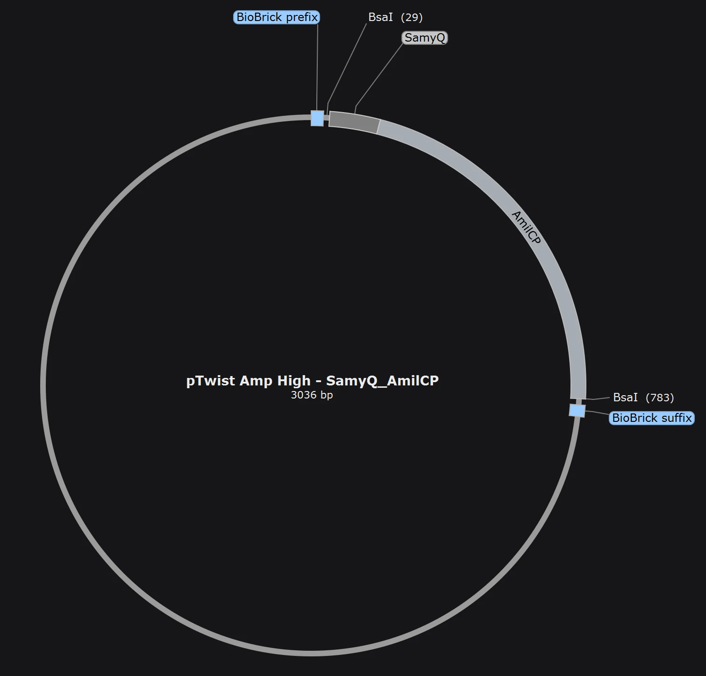
Most of the regulatory parts came out of a kit, several of the coding sequences came from teams who submitted them years ago, and what we added is a set of fusions and variants that did not exist before this summer.
Eleven entries come straight from the SubtiToolKit [5], a Golden Gate kit written for B. subtilis and Gram-positive hosts, along with every destination vector we used: pSTK-0 for entry parts, pSTK-1A through pSTK-1D for transcription units, pSTK-2 for the joined circuit and pSTK-EXP-1 and pSTK-EXP-2 for the shuttle builds. The kit parts are Pveg, PlepA, PliaG, PtagC+RBS, RBS0, the EEBD blocking device, B0015, L3S2P21, and the Csn, AmyQ and GanA secretion tags.
Five coding and regulatory parts come from earlier iGEM teams: BBa_K1232004 for the Ho1:pcyA operon, BBa_K592002 for CcaR, BBa_K823000 and BBa_K823002 for PliaG and PlepA through BioBrick Box 2.0, and the Pveg accession in dispute under P1. The alternate promoter and RBS panel adds five more that were ordered and not used: BBa_K143013, BBa_K3317064, BBa_K2086002, BBa_K5178006 and BBa_K3317072.
What we would submit is the set whose cards carry no accession. In order of how much evidence sits behind each one:
Registry documentation is judged partly on characterisation, so here is exactly which measurements this collection has and which it does not.
What we hold is cloning evidence: plasmid sizes, colony PCR amplicons, restriction digests and Sanger reads, all listed in the folds below with their dates. We also hold a transformation efficiency curve for B. subtilis 168 on the Engineering page, which is a measurement about the host and not about any part in this collection.
What we do not hold is any output measurement for any part. No part here has a fluorescence, absorbance or enzyme activity number attached to it. PcpcG2-veg has never been shown to change output in response to green light, in either direction, so the promoter at the centre of the design is uncharacterised and so is everything downstream of it. The three Western blots of 2, 7 and 24 August are the only protein-level data, and the 24 August blot, the only one whose ladder resolves, carries a single band at roughly 41 kDa in the lane loaded with the 18 August culture; the lane holding the culture that was actually sprayed on plants is blank. That band cannot be tied to a named part in this collection.
Every registry entry we submit should therefore describe its characterisation as absent and say what measurement would close the gap. For PcpcG2-veg the missing measurement is a green-light induction curve against a dark control in strain 168.
Every status word on the cards above comes from here. This record is assembled from four files kept separately during the summer: the Level 0 progression sheet, the Level 1 assembly sheet with its cloning and colony PCR lengths, the sequencing file with colony numbers and dates, and the monthly gel decks.
They disagree, and the disagreements reach the main constructs. The spreadsheet called PARTS PROGRESSION FINAL!!.xlsx is the most organised of the four and also the most out of date: its Level 2 sheet contains no Level 2 work at all (P15), and its Level 1 sheet still reads Not started
for three constructs that were sequenced in August and September (P6). It is treated here as one source among several and not as the record. Where a gel and a sheet disagree, the tables in the folds below follow the gel, and the disagreement is written up under To fix before the freeze.
Level 0 is where a coding sequence or a regulatory element becomes a standard entry part. The six step columns below are, in full, plasmid, glycerol stock, PCR product, TA cloning, enzyme digestion and sequencing. Six of our parts went all the way through. The rest of the sheet is the alternate promoter and ribosome binding site panel, which arrived from the synthesis house on pUC57mini and never entered the workflow, because the kit already had promoters that did the same job.
| Part | Type | Plasmid | Stock | PCR | TA | Digest | Seq. | Status |
|---|---|---|---|---|---|---|---|---|
| pGEM-Teasy-Ho1-pcyA | CDS | ✓ | ✓ | ✓ | ✓ | ✓ | ✓ | Sequence-confirmed L0 |
| ccaSm3 | CDS | ✓ | ✓ | ✓ | ✓ | ✓ | ✓ | Sequence-confirmed L0 |
| ccaR | CDS | ✓ | ✓ | ✓ | ✓ | ✓ | ✓ | Sequence-confirmed L0 |
| Csn:AmilCP | CDS | ✓ | ✓ | ✓ | ✓ | ✓ | ✓ | Sequence-confirmed L0 |
| Csn:AccD | CDS | ✓ | ✓ | ✓ | ✓ | ✓ | ✓ | Sequence-confirmed L0 |
| Csn:Lea | CDS | ✓ | ✓ | ✓ | ✓ | ✓ | ✓ | Sequence-confirmed L0 |
| SamyQ-TAT-HA-AmilCP | CDS | ✓ | ✓ | Cloned L0 | ||||
| PcpcG2-veg | Promoter | ✓ | ✓ | ✓ | ✓ | ✓ | Sequence-confirmed L0 | |
| EEBD-MF001 | RBS | ✓ | ✓ | ✓ | Cloned L0 | |||
| PrpsD, Pveg, PserA, PREF, PymdA, P43 | Promoter | Designed | ||||||
| MF001, sRBS2, MF002 | RBS | Designed | ||||||
| L3S1P52:L3S2P56 | Terminator | Designed |
The nine designed-only parts exist as physical DNA. Their maps are below, and each one is a short insert between two BsaI sites on a small synthesis backbone, ready to go into Level 0 whenever somebody has a reason to.
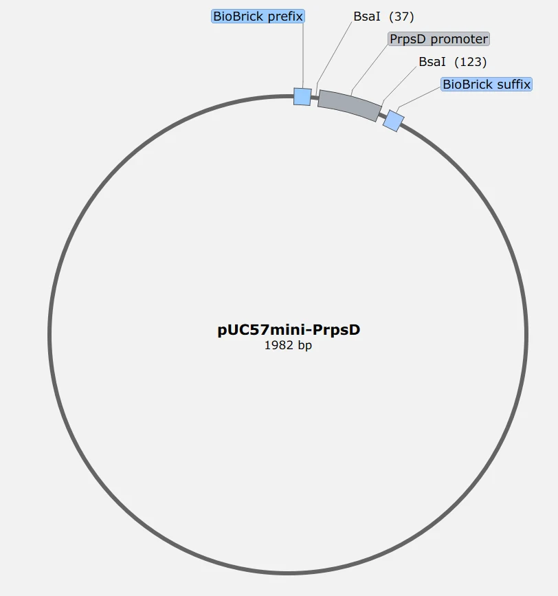
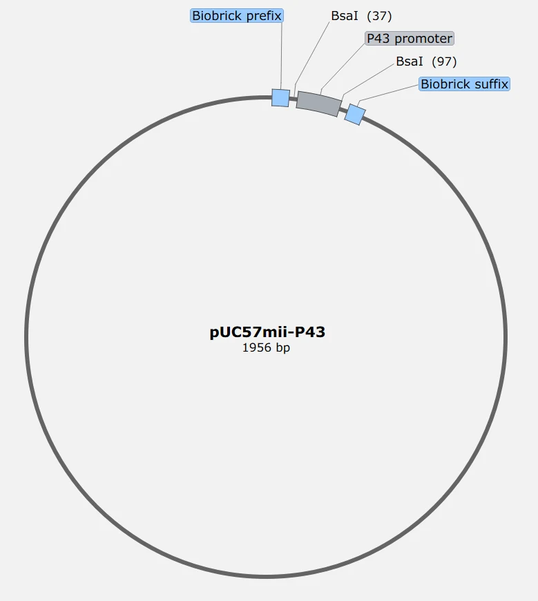
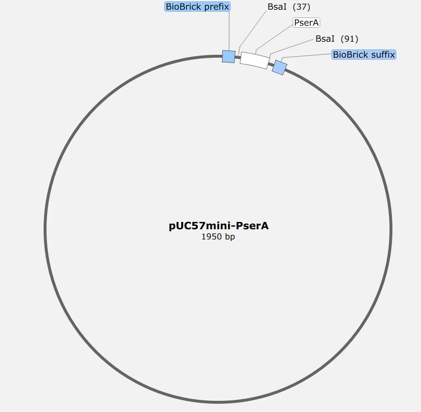
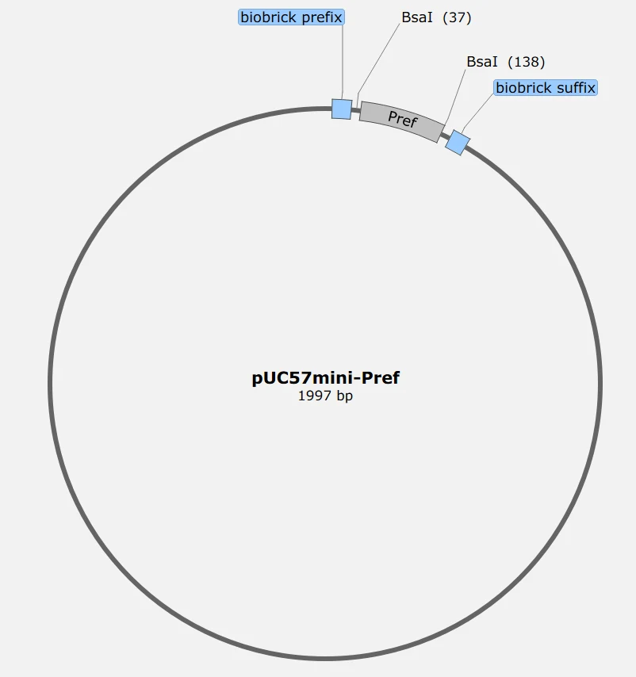
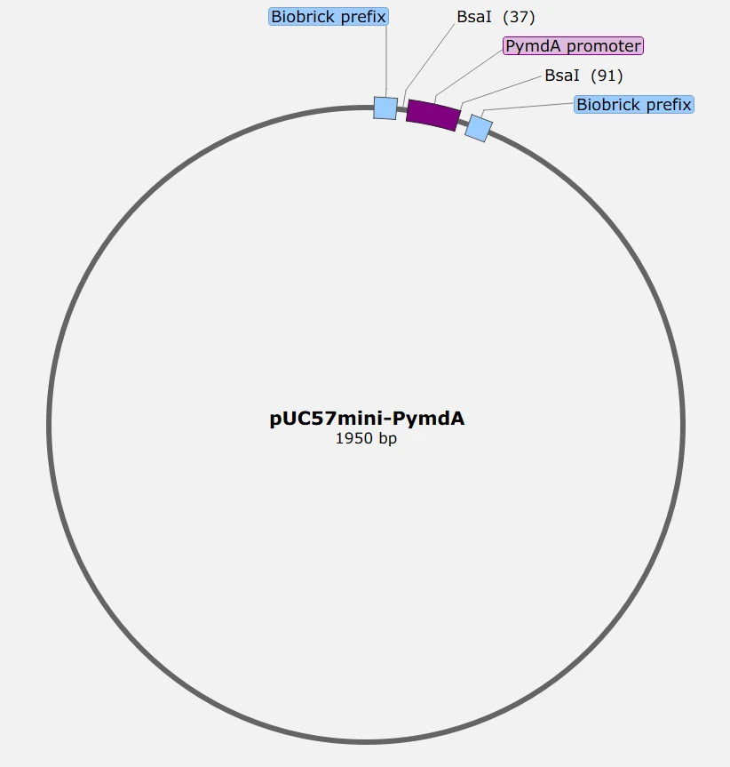
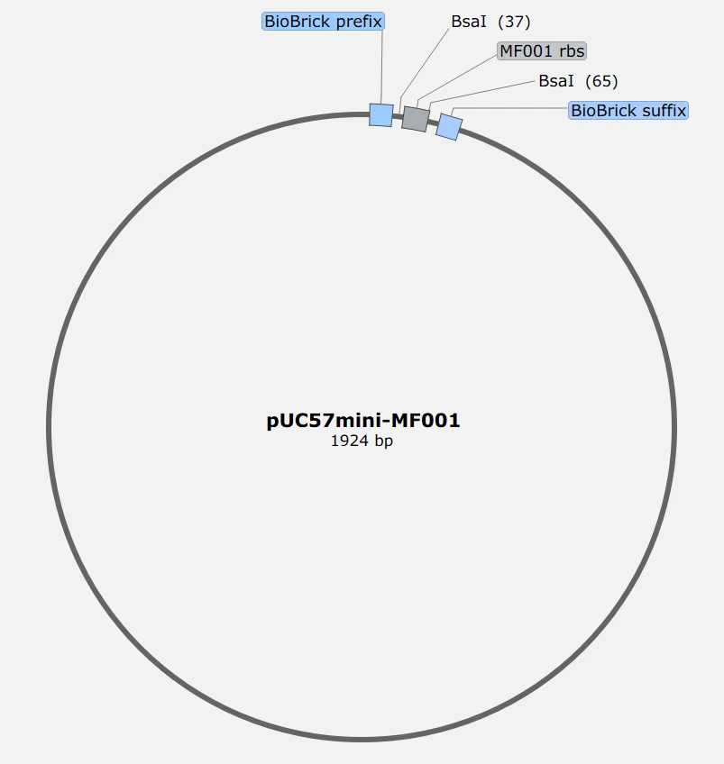
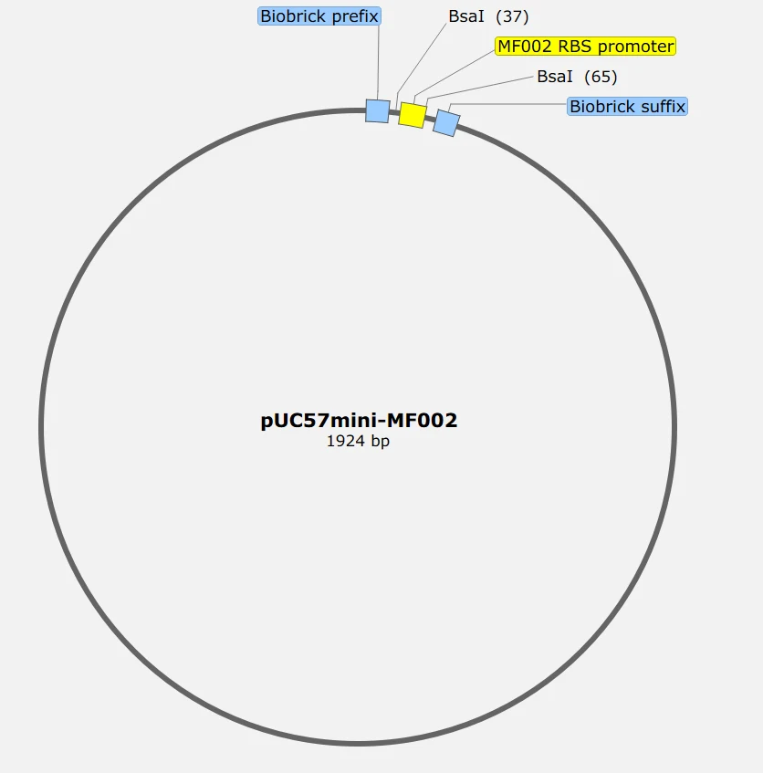
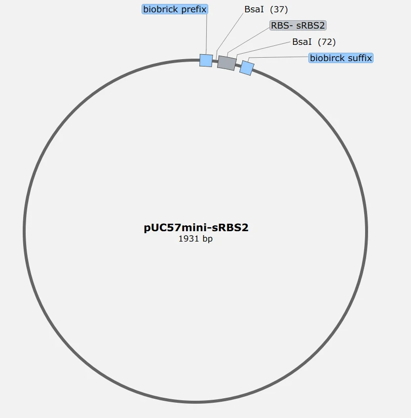
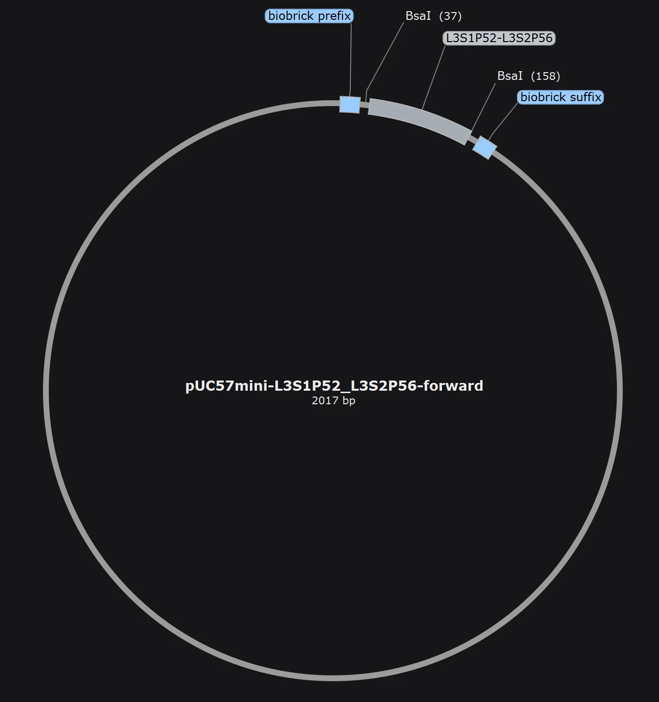
Twelve transcription units were attempted, labelled A to M in the sequencing record. Nine reached a sequence-confirmed colony. Every date below is 2026.
| Label | Architecture | Vector | Cloning bp | Colony PCR | Sequenced | Status |
|---|---|---|---|---|---|---|
| A | PtagC+RBS · Ho1:pcyA · L3S2P21 | pSTK-1A-sfGFP | 3,754 | 30 Jul, 1,833 bp | 31 Jul · A1, A2, A3 | Sequence-confirmed L1 |
| B | PliaG · RBS0 · CcaS-m3 · B0015 | pSTK-1B-sfGFP | 3,792 | 24 Jun | 3 Jul · B2 | Sequence-confirmed L1 |
| C | PlepA · RBS0 · CcaS-m3 · B0015 | pSTK-1B-sfGFP | 3,828 | 22 Jul | 24 Jul · C6, C9 | Sequence-confirmed L1 |
| D | Pveg · RBS0 · CcaR · B0015 | pSTK-1C-sfGFP | 3,243 | 26 Jun | 1 Jul · B2, B4 (see P7) | Sequence-confirmed L1 |
| E | PcpcG2-veg · EEBD-RBS0 · Csn:AmilCP · B0015 | pSTK-1D-sfGFP | not recorded | 24 Jun | 3 Jul · G3 | Sequence-confirmed L1 |
| F | Pveg · EEBD-RBS0 · Csn:AmilCP · B0015 | pSTK-1D-sfGFP | 7,395 | 26 Jun | 3 Jul · H10 | Sequence-confirmed L1 |
| G | PcpcG2-veg · EEBD-RBS0 · Csn:LEA · B0015 | pSTK-1D-sfGFP | 3,296 | G7 to G9 into liquid culture, 4 Aug | Unsuccessful · contested, see P14 | |
| H | Pveg · EEBD-RBS0 · Csn:LEA · B0015 | pSTK-EXP-1-sfGFP | not recorded | Assembled L1 | ||
| I | PcpcG2-veg · EEBD-RBS0 · Csn:ACCD · B0015 | pSTK-1D-sfGFP | 3,757 | 27 Jul | 28 Jul · I3, I6 | Sequence-confirmed L1 |
| J | Pveg · EEBD-RBS0 · Csn:ACCD · B0015 | pSTK-EXP-1-sfGFP | not recorded | 27 Jul, digest | 28 Jul · J9 | Sequence-confirmed L1 |
| K | Pveg · EEBD-RBS0 · SamyQ-TAT-HA-AmilCP · B0015 | pSTK-EXP-1-sfGFP | 7,464 | 9 Jul | 14 Jul · D10, D14 | Sequence-confirmed L1 |
| L | P3P · EEBD-RBS0 · spacer · GanA-Gala · 6×His · L3S2P21 | pSTK-EXP-1-sfGFP | not recorded | L1 and L3 at 1.3 kb, 18 Aug 24 clones at 3,535 bp, 5 Sep | Unsuccessful · contested, see P14 | |
| M | PcpcG2-veg · EEBD-RBS0 · GanA-Gala · L3S2P21 | not recorded | not recorded | M9 at 2,837 bp, 9 Sep | Unsuccessful · contested, see P14 | |
| N | Pveg · SamyQ-BoPep4-v2t1 · B0015 | pSTK-EXP-1 | not recorded | N9 to N19 at 559 bp, 9 Sep | Colony-PCR checked L1 | |
| O | Pveg · SamyQ-BoPep4-v2t2 · B0015 | pSTK-EXP-1 | not recorded | O9 to O12 at 559 bp, 9 Sep | Colony-PCR checked L1 | |
| P | Pveg · EEBD-RBS0 · SamyQ:ACCD v2t1 · B0015 | pSTK-EXP-1 | not recorded | P1 to P9 at 1,286 bp, 17 Sep | 26 Aug · P2, P7 | Sequence-confirmed L1 |
| Q | PcpcG2-veg · SamyQ:ACCD v2t1 · B0015 | pSTK-1D | not recorded | 3 Sep · Q2, Q3, Q15 | Sequence-confirmed L1 | |
| R | Pveg · EEBD-RBS0 · Csn:LEA · B0015 | pSTK-1D / EXP-1 | not recorded | 26 Aug · R2, R5 | Sequence-confirmed L1 | |
| S | Pveg · EEBD-RBS0 · SamyQ:LEA v2t1 · B0015 | pSTK-1D / EXP-1 | not recorded | 3 Sep · S5, S11 | Sequence-confirmed L1 |
Labels A to M come from the circuit sheet and N to S from the protectant sheet, which is why the letters R and S appear twice in the archive with different meanings, once as a Level 0 label and once as a Level 1 one. The letters used above are the Level 1 ones.
Three consecutive Golden Gate rounds returned nothing with no design change between them. The insert-to-vector ratio was then swept at 1:5 and 1:7, and on 1 September one clone from each ratio was checked across all three internal junctions: junction A at 375 bp, junction B at 632 bp and junction C at 661 bp. Those two clones are X5 and X7, named after the ratios that produced them. Three junctions is what separates a complete circuit from a plasmid that happens to contain one module.
On 19 September the check was repeated and widened. Three independent ACDI clones, X1, X3 and X9, were run at all three junctions in a single nine-lane gel, and every lane carries a band. That is the strongest cloning evidence the project holds.
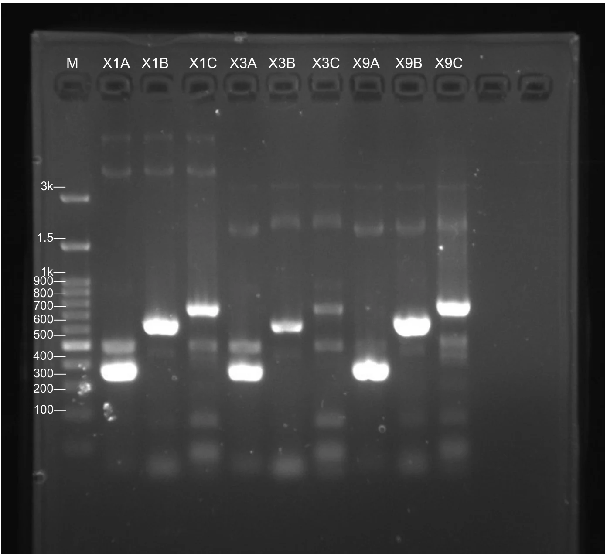
A second Level 2 device also exists and has never appeared on this wiki. ABDI is the same four modules with the PliaG version of the CcaS unit in place of the PlepA one, so it is A, B, D and I where the other is A, C, D and I. Its clone V7 was called positive on 1 September, and it was screened across August and again on 17 September. It has never had all three junctions checked in one gel, which is the difference between it and ACDI.
| Label | Combination | Colony | Colony PCR | Sequenced | Status |
|---|---|---|---|---|---|
| X | ACDI · A, C, D, I | X5, X7 X1, X3, X9 | 1 Sep, three junctions on two clones 19 Sep, three junctions on three clones 8 Sep, X5 and X7 at 1,424 bp 18 Sep, ten lanes at 632 bp | Colony-PCR checked L2 | |
| V | ABDI · A, B, D, I | V7 | 8 Aug, three junctions at 2,626 / 1,195 / 1,549 bp 19 Aug, V1 to V8 at 1,424 bp 1 Sep, V7 called positive 17 Sep, V1 to V7 | Colony-PCR checked L2 |
Three Level 1 assemblies are marked unsuccessful in the sequencing record, and they are named here because a parts page that lists only the ones that worked is not a record of anything. All three have since turned up on gels as positives, which is P14 and is unresolved.
Most of the collection is borrowed; the protectant series is not. Three protectant proteins were taken as starting points, ACC deaminase, LEA14 and the broccoli elicitor peptide BoPep4, and each was put through some combination of codon optimisation, point mutation and truncation, then fused to a secretion peptide. The variant suffixes follow a v-and-t convention of the team's own: v is the sequence version and t is the trial within it.
The v2 series is not a change to the protein. In each design the first 15 codons of the coding sequence were synonymously recoded, so the amino acid sequence is unchanged and what moves is the mRNA secondary structure around the ribosome binding site and the start codon. What the record below holds is the cloning, not the expression.
| Design | L0 label | L0 colony | L0 seq. | L1 label | L1 colony | L1 seq. | Status |
|---|---|---|---|---|---|---|---|
| SamyQ-BoPep4 (WT) | Designed | ||||||
| SamyQ-BoPep4-v2t1 | V | V4, V19 | 19 Aug | N | N9 to N19, colony PCR 9 Sep | Sequence-confirmed L0 | |
| SamyQ-BoPep4-v2t2 | V | V7 | 19 Aug | O | O9 to O12, colony PCR 9 Sep | Sequence-confirmed L0 | |
| SamyQ-ACCD-v2t1 | QD | QD2 | 20 Aug | P, Q | P2, P7 · Q2, Q3, Q15 | 26 Aug · 3 Sep | Sequence-confirmed L1 |
| SamyQ-ACCD-v3t1 | Designed | ||||||
| Csn:LEA | S | S16 | 20 Aug | R | R2, R5 | 26 Aug | Sequence-confirmed L1 |
| SamyQ-LEA (WT) | Designed | ||||||
| SamyQ-LEA-v2t1 | QA | QA1 | 20 Aug | S | S5, S11 | 3 Sep | Sequence-confirmed L1 |
| SamyQ-LEA-v2t2 | E | Designed |
Four designs reached a sequenced Level 1 colony and four exist only as sequences. The two BoPep4 codon-optimised versions sit in between: the coding sequence has been read, and the transcription unit around it was screened at 559 bp on 9 September without being sequenced.
The truncation work goes the other way from the mutations. Instead of stabilising the whole peptide, it cuts it down, on the reasoning that a smaller peptide both crosses plant tissue more easily and secretes more efficiently. Two constructs were planned for direct assembly into the shuttle vector, with the originals held on a pTwist Amp backbone: the full-length peptide behind Pveg, and the truncated fragment behind Pveg. Neither has a colony number or a sequencing date. Both are Designed.
Two further single-substitution variants, S15A and G17A, sit alongside them at the same stage. What the substitutions were chosen to do, and on what evidence, belongs to Peptide Design, and that page also carries the claims the team retracted in writing. Nothing on this page should be read as a comparison between protectants: LEA14 and BoPep4 have never touched a plant, and a four-way protectant comparison cannot be made from this evidence.
On 18 September the designed peptide and its two point mutants were cloned and screened at Level 0: twenty-one colonies across three constructs, all at 548 bp with the STK sequencing primers. Twenty of the twenty-one carry a band at the expected size, and one, Ã2, runs low and carries extra product above it. This is the first wet lab record of the dry lab's peptide designs existing as DNA.
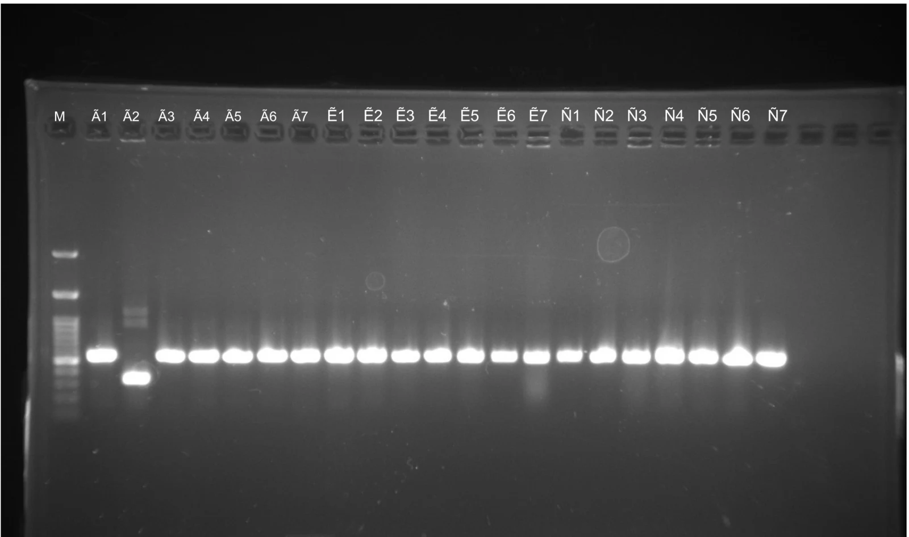
Bopep4_S15A_1-23_NHis,
Ê1 to Ê7 are Bopep4_G17A_1-23_NHis, and
Ñ1 to Ñ7 are Bopep4_WT_1-23_NHis. 3 kb ladder.
| Construct | Clones | Amplicon | Date | Status |
|---|---|---|---|---|
| Bopep4_WT_1-23_NHis | Ñ1 to Ñ7 | 548 bp | 18 Sep | Colony-PCR checked L0 |
| Bopep4_S15A_1-23_NHis | Ã1 to Ã7, Ã2 runs low | 548 bp | 18 Sep | Colony-PCR checked L0 |
| Bopep4_G17A_1-23_NHis | Ê1 to Ê7 | 548 bp | 18 Sep | Colony-PCR checked L0 |
These are easy to over-claim from. They are residues 1 to 23 with an N-terminal histidine tag, in a Level 0 storage plasmid. A His tag on the front is a purification handle, so these were built to make protein in a tube, not to be secreted. They are not the SamyQ fusions, and the SamyQ-fused versions of S15A and G17A on the cards stay Designed because no record shows the fusion being built. Nothing here is expression, purification or assay, and none of it changes the standing position that BoPep4 has never been on a plant.
Eight registry entries have been opened for the protectant series: SamyQ-LEA-v2t1, SamyQ-LEA-v2t2, SamyQ-ACCD-v2t1, SamyQ-ACCD-v3t1, Bopep4_WT_1-23_NHis, Bopep4_9-23_NHis, Bopep4_G17A_1-23_NHis and Bopep4_S15A_1-23_NHis. Each carries the same six headings: functional description, construct, sequence, sequence analysis, documentation and construct design. Three of them now have text under the first heading and the rest are still blank, which is what the section below shows. The two BoPep4 codon-optimised variants are written up in full in the parts draft and have no registry entry opened for them yet. Four of the eight describe DNA nobody has made yet, and those four cannot carry more than a design section.
Below is what the team has written for each part so far, in their words, with the construct diagram for each one. Where an entry is still the blank template, this page says so rather than filling it in.
The mRNA secondary structure around the ribosome binding site and start codon heavily influences the translation-initiation efficiency inside bacteria, independent of the encoded protein sequence. Synonymous codons, meaning codons that result in the same amino acids, in the 5′ end of a CDS can impact how the mRNA folds near the binding site. The folding can either hide or expose the Shine Dalgarno sequence and start codon, impacting the efficiency of ribosome binding and translation initiation. Following this concept suggested by Castillo-Hair [1], the design pipeline treated the first 15 codons of each CDS as an editable region. ViennaRNA 2.7.2 [6] was used to generate and fold tens of thousands of synonymous variants in the RS-inclusive 236 nt 5′ window (residual recombination site, MF001 RBS, spacer, SamyQ ORF and the first 90 nt of the CDS), determining the mean base-pair unpaired probability across the 15 nt following the ATG and across the MF001 Shine-Dalgarno core (AAGGAGG) and creating a balance score.
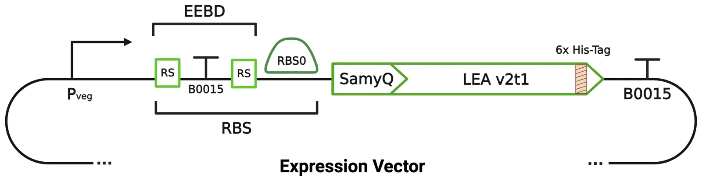
Short description. SamyQ-LEA-v2t1 connects a Late Embryogenesis Abundant (LEA14) protein to SamyQ, a Sec-secretion signal peptide, directing the proteins through a Sec-dependent pathway in B. subtilis 168. LEA14 is an intrinsically disordered protein that can help plants stabilise cellular membranes under drought, salinity, heat and osmotic stress. In this variant, we synonymously recoded the first 15 codons of the coding sequence to improve the mRNA secondary structure of the translation start site.
Detailed description. LEA proteins, a family of stress-protective proteins, are small, partially folded and hydrophilic proteins that stabilise membranes and isolate ions to prevent water loss [8]. In our project, LEA14 is expressed as a secreted output under the PcpcG2-veg promoter of a CcaSR light-inducible expression system in B. subtilis 168, relieving plants from abiotic stresses.
SamyQ-LEA-v2t1 was determined to be the best candidate from the run: 6 of the first 15 LEA14 codons were changed (c1 GCG→GCA, c2 TCT→AGT, c3 TTA→CTC, c4 TTA→CTC, c10 TTT→TTC, c11 GTA→GTC). The predicted start+15 accessibility improved from 0.538 to 0.669 and SD-core accessibility decreased from 0.357 to 0.307 when compared to the wild type, resulting in an overall balance score gain of 0.895 to 0.976. The codon adaptation index against B. subtilis 168 usage [7] dropped from 0.85 to 0.81. Instead of following Castillo’s rule, which prioritises low GC content and A over U, the program individually folded and verified every candidate to verify improved accessibility, as the Castillo-rule-applied control produced a start+15 score of only 0.669 and an SD-core score of 0.078 (balance 0.748), which was lower than wild type.
Sequence. 1,096 bp. Cassette: PcpcG2-veg promoter → EEBD (RS, rrnB T1, T7Te, RS) → MF001 RBS (SD core AAGGAGG) → SamyQ signal peptide (unedited) → LEA14 CDS (codons 1 to 15 recoded) → 6×His tag → B0015 double terminator. CDS 1 to 45 nt, wild type: GCGTCTTTATTAGATAAAGCAAAAGATTTTGTAGCTGATAAATTA. CDS 1 to 45 nt, recoded: GCAAGTCTCCTCGATAAAGCAAAAGATTTCGTCGCTGATAAATTA.
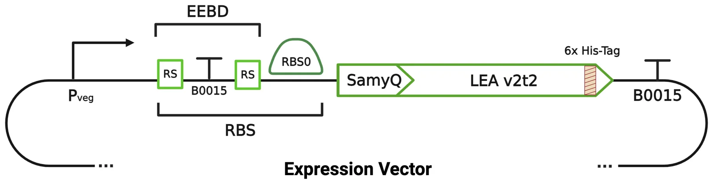
Functional description. SamyQ v2t1 encodes a Late Embryogenesis Abundant (LEA14) protein designed to protect cellular structures and maintain cellular stability under environmental stress conditions. The LEA14 protein is fused to the SamyQ secretion signal, which directs the recombinant protein through the Sec-dependent secretion pathway, facilitating its transport across the bacterial membrane and promoting extracellular accumulation. The original wild-type LEA14 sequence was codon-optimized to enhance protein expression and stability, supporting efficient protein production and secretion while improving its performance and effectiveness during field application.
The v2t2 entry repeats the older v2t1 wording word for word, including the opening “SamyQ v2t1”, and the 1 October draft adds nothing for it. It needs a sentence saying how v2t2 differs from v2t1.
Short description. SamyQ-ACCD-v2t1 connects 1-aminocyclopropane-1-carboxylate (ACC) deaminase (acdS), a plant-growth-promoting enzyme, to SamyQ, a Sec-secretion signal peptide, directing the protein through a Sec-dependent pathway in B. subtilis 168. ACC deaminase degrades ACC, the precursor of the plant stress hormone ethylene, helping relieve plants from ethylene-driven growth inhibition under abiotic stress once secreted into the rhizosphere. In this variant, we synonymously recoded 12 of the first 15 codons of the coding sequence to improve the mRNA secondary structure of the translation start site.
Detailed description. ACC deaminase is a plant-growth-promoting enzyme that hydrolyses ACC before it is converted into ethylene, reducing stress-induced ethylene accumulation in nearby plant roots and helping plants better tolerate drought, salinity, flooding and pathogen stress [9]. In our project, ACC deaminase is expressed as a secreted output under the PcpcG2-veg promoter of a CcaSR light-inducible expression system in B. subtilis 168, relieving plants from abiotic stresses.
SamyQ-ACCD-v2t1 was determined to be the best candidate from the run: 12 of the first 15 acdS codons were changed (c2 TTA→TTG, c3 AAT→AAC, c4 AGA→CGC, c7 AGA→CGC, c8 TAT→TAC, c9 CCG→CCC, c10 TTA→CTT, c11 ACA→ACT, c12 TTC→TTT, c13 GGA→GGG, c14 CCG→CCA, c15 AGC→AGT). The predicted start+15 accessibility improved from 0.563 to 0.773 and SD-core accessibility improved from 0.088 to 0.203 when compared to the wild type, resulting in an overall balance score gain of 0.651 to 0.976. The codon adaptation index against B. subtilis 168 usage [7] dropped from 0.85 to 0.75. Instead of following Castillo’s rule, which prioritises low GC content and A over U, the program individually folded and verified every candidate to verify improved accessibility, as the Castillo-rule-applied control produced a start+15 score of only 0.698 and an SD-core score of 0.186 (balance 0.884), which, although still an improvement over wild type, remained lower than the balance achieved through individual verification of every candidate.
Sequence. 1,657 bp. Cassette: PcpcG2-veg promoter → EEBD (RS, rrnB T1, T7Te, RS) → MF001 RBS (SD core AAGGAGG) → SamyQ signal peptide (unedited) → acdS CDS (codons 1 to 15 recoded) → 6×His tag → B0015 double terminator. CDS 1 to 45 nt, wild type: AATTTAAATAGATTTGAAAGATATCCGTTAACATTCGGACCGAGC. CDS 1 to 45 nt, recoded: AATTTGAACCGCTTTGAACGCTACCCCCTTACTTTTGGGCCAAGT.
The registry entry for this part carries the six headings and no text yet: functional description, construct, sequence, sequence analysis, documentation and construct design.
Short description. SamyQ-BoPep4-v2t1 connects BoPep4, a 23-residue plant elicitor peptide (PEP) from broccoli (Brassica oleracea var. italica), to SamyQ, a Sec-secretion signal peptide, directing the peptide through a Sec-dependent pathway in B. subtilis 168. BoPep4 is expressed as a secreted output under the PcpcG2-veg promoter of a CcaSR light-inducible expression system, targeting microbes in the extracellular environment once exported. In this variant, we synonymously recoded 9 out of the first 15 codons of the coding sequence to improve the mRNA secondary structure of the translation start site.
Detailed description. BoPep4 is a short, 23-amino-acid mature PEP (GILIGSKKRPREPHSSGKPGGHN) used as a secreted output. In our design, BoPep4 is fused C-terminally to the SamyQ signal peptide and expressed under the PcpcG2-veg promoter of the same CcaSR light-inducible system used for our other secreted outputs in B. subtilis 168. The peptide utilises an auxin and abscisic acid signalling crosstalk to enhance salt-stress tolerance in broccoli by reducing the Na+/K+ ratio, and by promoting leaf wax and cutin accumulation [10].
Wild-type BoPep4 was the weakest starting point of the whole construct series: start+15 accessibility was only 0.396 and SD-core accessibility only 0.067, both below the roughly 0.50 usability threshold and the Ho1 reference baseline (0.681). SamyQ-BoPep4-v2t1 was determined to be the best candidate from the run: 9 of the first 15 BoPep4 codons were changed (c2 ATT→ATC, c5 GGA→GGT, c6 TCA→AGT, c7 AAA→AAG, c10 CCG→CCT, c11 AGA→AGG, c13 CCG→CCT, c14 CAT→CAC, c15 TCA→TCC). The predicted start+15 accessibility improved from 0.396 to 0.497, and SD-core accessibility rose sharply from 0.067 to 0.634, roughly a 9.5-fold gain, resulting in an overall balance score gain of 0.462 to 1.131. The codon adaptation index in B. subtilis 168 [7] dropped from 0.87 to 0.77. We verified this variant against a Castillo-rule-applied control (low GC content, A over U): the control reached a start+15 of 0.677 and an SD-core of 0.425 (balance 1.102), an improvement over wild type, but still below the balance achieved by individually folding and verifying each candidate.
Sequence. 715 bp. Cassette: PcpcG2-veg promoter → EEBD (RS, rrnB T1, T7Te, RS) → MF001 RBS (SD core AAGGAGG) → SamyQ signal peptide (unedited) → BoPep4 CDS (codons 1 to 15 recoded) → 6×His tag → B0015 double terminator. CDS 1 to 45 nt, wild type: GGCATTTTAATTGGATCAAAAAAAAGACCGAGAGAACCGCATTCA. CDS 1 to 45 nt, recoded: GGCATCTTAATTGGTAGTAAGAAAAGACCTAGGGAACCTCACTCC.
Short description. SamyQ-BoPep4-v2t2 connects BoPep4, a 23-residue plant elicitor peptide (PEP) from broccoli (Brassica oleracea var. italica), to SamyQ, a Sec-secretion signal peptide, directing the peptide through a Sec-dependent pathway in B. subtilis 168. BoPep4 is expressed as a secreted output under the PcpcG2-veg promoter of a CcaSR light-inducible expression system, targeting microbes in the extracellular environment once exported. In this variant, we synonymously recoded the first 15 codons of the coding sequence to improve the mRNA secondary structure of the translation start site.
Detailed description. 8 of the 15 codons were changed (c1 GGC→GGT, c2 ATT→ATA, c3 TTA→CTC, c5 GGA→GGT, c6 TCA→AGT, c9 AGA→CGG, c11 AGA→CGG, c15 TCA→AGT), and the BoPep4 protein sequence is unchanged from wild type. Predicted start+15 accessibility rose from wild-type 0.396 to 0.432 while SD-core accessibility rose from 0.067 to 0.658. The combined balance score is 1.090, and the codon adaptation index value in B. subtilis 168 [7] dropped from 0.87 to 0.77.
Sequence. 715 bp. Cassette: PcpcG2-veg promoter → EEBD (RS, rrnB T1, T7Te, RS) → MF001 RBS (SD core AAGGAGG) → SamyQ signal peptide (unedited) → BoPep4 CDS (codons 1 to 15 recoded) → 6×His tag → B0015 double terminator. CDS 1 to 45 nt, wild type: GGCATTTTAATTGGATCAAAAAAAAGACCGAGAGAACCGCATTCA. CDS 1 to 45 nt, recoded: GGTATACTCATTGGTAGTAAAAAACGGCCGCGGGAACCGCATAGT.
Both truncations exist as diagrams, and our own files name the truncation two different ways (P3 above). One diagram is drawn as BoPep4-15-23 and the other as BoPep4-9-23, so both were designed at some point.
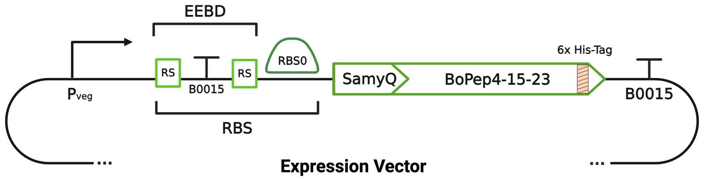
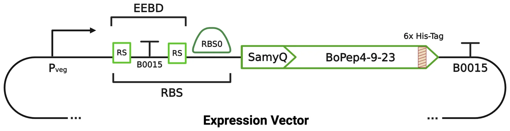
The registry entry for this part carries the six headings and no text yet: functional description, construct, sequence, sequence analysis, documentation and construct design.
The protectant team’s own tracker, as it stands in Parts writing.docx. Blank cells are blank in the tracker.
| Label | Clone into level 0 | Colony number | Sequence date | Label | Clone into level 1 | Colony number | Sequence date |
|---|---|---|---|---|---|---|---|
| SamyQ-BoPep4 (WT) | |||||||
| V | SamyQ-BoPep4-v2t1 | V#4, #19 | 8/19 | N | pSTK-EXP1-Pveg-SamyQ-BoPep4-v2t1-B0015 | ||
| V | SamyQ-BoPep4-v2t2 | V#7 | 8/19 | O | pSTK-EXP1-Pveg-SamyQ-BoPep4-v2t2-B0015 | ||
| Csn:ACCD | |||||||
| QD | SamyQ-ACCD-v2t1 | #QD2 | 8/20 | P | Pveg-EEBD-RBS0-SamyQ:ACCD-v2t1-B0015 | #P2, P7 | 8/26 |
| Q | pSTK1D-PcpcG2-veg-SamyQ-ACCD-v2t1-B0015 | #Q2, Q3, Q15 | 9/3 | ||||
| SamyQ-ACCD-v3t1 | |||||||
| S | Csn:LEA | #S16 | 8/20 | R | pSTK1D-EXP1-Pveg-EEBD-RBS0-csn:lea-B0015 | #R2, R5 | 8/26 |
| SamyQ-LEA (WT) | |||||||
| QA | SamyQ-LEA-v2t1 | #QA1 | 8/20 | S | pSTK1D-EXP1-Pveg-EEBD-RBS0-SamyQ-LEA (v2t1)-B0015 | S5, S11 | 09/03 |
| E | SamyQ-LEA-v2t2 |
Seventeen things on this page are unresolved, and almost every one of them is a disagreement between two of our own records rather than a gap in the writing: an accession written two ways, a part name spelled three ways, two ribosome binding sites claimed for one construct. They used to sit as boxes beside the claims they qualify, and they are collected here to keep the cards above short. Each box still names both claims and both sources. Delete a box as it is settled, and delete the note under them when none are left.
Parts_.docx gives Pveg as BBa_K143012. The build record gives it as BBa_K823003: the STK parts sheet names the entry STK028_pSTK-0A-Pveg (BBa_K823003) and adds, in its own notes column, that we used the medium expression Pveg (BBa_K823003), that differs in 4 nucleotides from the strong version
.
This matters more than a citation slip. Those four nucleotides are the difference between a medium and a strong constitutive promoter, and Pveg drives CcaR in module 3 and the whole cargo in the shuttle build. Decide which accession the parts we submit actually carry, put that one in both the docx and the Registry entry, and say in the entry that it is the medium variant.
Every table in Parts_.docx calls the secretion signal SamyQ and attributes it to B. subtilis. The SubtiToolKit inventory has no SamyQ. It has STK330_pSTK-0Cx-AmyQ secretion tag, the signal peptide of the Bacillus amyloliquefaciens alpha-amylase AmyQ, and the S in our name is presumably signal peptide of
. If that is right, the Registry entries should say so in one line, because a reader searching for AmyQ will not find SamyQ and a reader searching for SamyQ will find nothing at all. If it is not right, then the source of the peptide is undocumented and needs to be established before submission.
In the green-light module table of Parts_.docx the truncation is SamyQ-Bopep4-15-23, described as amino acids 15 to 23. Two pages later, in the secretion reporter table of the same file, it is SamyQ-Bopep4 (9-23). The protein design registry list in Parts writing.docx has it a third way, Bopep4_9-23_NHis, with an N-terminal histidine tag the parts tables do not mention.
Nine to twenty-three and fifteen to twenty-three are different peptides. The cards on this page use 9-23, because two of the three sources say so, but that is a majority vote and not a decision. Check the ordered sequence, fix the name in every file, and decide whether the His tag is part of the submitted construct or a purification aid stripped before submission.
Parts_.docx opens by setting the convention: species italic with an initial capital, gene names italic lower case, protein names roman with an initial capital. The part names in the same file do not follow it. LEA appears as Csn:Lea
in two tables, as Csn:LEA
in the sequencing file and as csn:lea
in the Level 1 record for the same construct. The photoreceptor is filed in gene form, ccaS-m3, and the response regulator beside it in protein form, CcaR. BoPep4 is written BoPep4 and Bopep4 in adjacent rows.
A Registry name cannot be spelled three ways. Pick one form per part, apply it in the docx, and make the wiki follow the docx and not the other way round.
For assembly I, the Level 1 sheet in PARTS PROGRESSION FINAL!!.xlsx gives the RBS as EEBD-MF001. The sequencing file gives the same construct as PcpcG2-veg-EEBD-RBS0-Csn:ACCD-B0015, so EEBD-RBS0. Assembly I is sequence-confirmed, which means the answer is already sitting in a read on somebody's computer.
It matters because EEBD-MF001 is the composite whose Level 0 TA cloning and sequencing are both marked not started, and EEBD-RBS0 is the kit part STK207. Seven gel legends write the construct as PcpcG2-veg-EEBD-RBS0-Csn:ACCD-B0015: wiki figure_.pptx slide 10, Figure July 2026.pptx slides 22, 25, 41 and 47, and Figure August 2026.pptx slides 5 and 37. The cards and the Level 1 table follow the sequencing file and those legends, which is a reading convenience and not a ruling. Open the I3 or I6 read, settle it, and correct whichever file is wrong.
The Level 1 sheet marks SamyQ:ACCD v2t1, SamyQ:LEA v2t1 and SamyQ:LEA v2t2 as Not started
. The sequencing file has SamyQ:ACCD v2t1 confirmed twice, as P on 26 August and as Q on 3 September, and SamyQ:LEA v2t1 confirmed as S on 3 September.
The spreadsheet appears to have stopped being updated around the end of July, which is also when the four-module circuit work ended and the protectant work started. This page follows the sequencing file, which is the later record. Bring the sheet forward before anyone else uses it, because at present it understates what the team built.
Assembly D is Pveg → RBS0 → CcaR, and the sequencing file records its confirmed colonies as B2 and B4, which are B's letters. Either the colonies were picked from a plate labelled B, or two rows were transposed when the table was typed up. The D row of the Level 1 table carries the numbers as written and flags them here.
Assembly L is given a PtagC promoter by the Level 1 sheet and a 3P promoter by the sequencing file. L failed on every colony, so nothing downstream depends on the answer, but the row should still say one thing.
The 23 September draft has no AmilCP in it. The earlier page outline had three entries, Csn:AmilCP with accession BBa_K592009, SamyQ:AmilCP, and SamyQ-TAT-HA-AmilCP. Those three are the best-evidenced constructs in the whole build record: assemblies E, F and K, all sequence-confirmed in early July, and the only ones that would give a visible readout of secretion without a blot.
Dropping them leaves the module called secretion reporter
with no reporter in it, which a judge will notice. Either put the three cassettes back into the collection with their build evidence, or say in one line why the reporter track was retired.
Parts_.docx of 23 September gives Ho1:pcyA as Type B, basic. The agreed page outline in 0923 Wiki Subpage Structures.docx gives the same part as Type C, composite. A fusion of two coding sequences through a linker is arguably either, and the Registry entry has to pick one. The cards follow the newer file.
The same two files disagree in a second place. In the green-light module table, SamyQ:ACCD v2t1 and SamyQ:LEA v2t1 are filed as Reporter gene cassette
; in the secretion reporter table the same two parts are Functional gene cassette
. Neither one reports anything, so the cards use Functional gene cassette throughout. Confirm before the Registry entries are written.
Parts_.docx leaves the accession cell empty for PtagC+RBS, RBS0, B0015 and L3S2P21. Three of those are catalogued in the SubtiToolKit sheet with a source: B0015 is listed as Bba_B0015, and the kit also carries Bba_B0012. B0015 in particular is one of the best-known parts in the Registry and it is odd to show it without a number.
The cards on this page say No registry number yet
instead, because putting an accession next to a part without checking it is worse than leaving it out. Somebody should look each one up, and where a number exists, put it in the docx. Where one does not, the part is a candidate for submission in its own right.
In Parts_.docx, RBS0 appears three times, and all three entries end with the same clause: that it ensures expression of the enzymes required to convert endogenous heme into phycocyanobilin
. That is true only in the PCB module. In the light sensing module RBS0 sits in front of the photoreceptor, and in the transduction module it sits in front of the response regulator. The cards on this page carry corrected sentences. The docx still has the original text, and the Registry entry will be written from the docx unless somebody fixes it there.
The construct map in parts construct/CDS/ is named and titled pTwist Amp High - caaSm3
, with the first two letters transposed. Every other source, including the Level 0 sheet and the sequencing file, writes ccaS-m3 or ccaSm3. Figure 4 is published as drawn, because retouching a figure to correct a label in it is not something we do. Re-export the map from SnapGene with the right title and replace the file.
The Engineering page gives the three Level 2 junction checks as pcyA F against CcaSm3 R at 375 bp, CcaS F against CcaR R at 632 bp and CcaR F against CcaSm3 R at 661 bp.
The gels say something else for the third one. Figures September 2026.pptx slide 22 and Figure August 2026.pptx slide 56 both write C: CcaR F, Csn R at 661 bp. A CcaR forward primer against a CcaSm3 reverse primer would read backwards across the circuit, so it cannot be the same product as a read into Csn. Figure 23 follows the gel, and the Engineering page needs the same correction.
Unsuccessful. wiki figure_.pptx slides 9, 13 and 14 mark all three that way, and sequencing positive clone.docx repeats it and leaves their clone numbers blank.
In assembly. The Level 1 sheet gives G, H and L the status Assembly
, meaning under way.
Positive. The gels: G7 to G9 into liquid culture on 4 August and G4 and G6 on 10 August; L1 and L3 at 1.3 kb on 18 August; twenty-four L clones at 3,535 bp on 5 September; M9 at 2,837 bp on 9 September.
Three records of the same three constructs in three states, and none of them carries a date stamp saying when it was last true. The newest evidence is the most positive, so unsuccessful
is probably stale, but this page does not get to decide that. The tables keep the word the sequencing file uses and flag it. Whoever picked those colonies should say what happened to them. While it stands, G is the one that matters: it is the light-gated LEA unit, and whether it exists changes what the collection can claim.
One smaller thing in the same place: the 5 September gel writes L as pSTK-EXP1-3P-EEBD-RBS0-Csn:GanA-Gala-L3S2P21, with a Csn signal peptide that the tracker and the sequencing file both leave out of the name.
The Level 2 vector sheet of PARTS PROGRESSION FINAL!!.xlsx holds exactly one row: three spacers plus Pveg-EEBD-RBS0-csn::AmilCP-B0015 into pSTK-EXP-2-sfGFP, status Not started
. Neither ACDI nor ABDI appears anywhere in that workbook.
Against that sit fourteen gels across August and September, including the three-junction checks of 1 and 19 September. The file named FINAL is the most out-of-date record of Level 2 in the archive, and together with P6 that makes two sheets in it that understate the work. This page therefore treats the workbook as one source among several and not as the build record, and every Level 2 row comes from the gels and the sequencing file instead. Decide whether the spreadsheet is still maintained, and if it is not, say so at the top of it so the next person does not trust it.
The Level 1 sheet gives F, Pveg-EEBD-RBS0-Csn:AmilCP-B0015, a cloning length of 7,395 bp. Figure July 2026.pptx minipreps the same construct at 3,585 bp on slides 7, 8 and 14.
That cannot be a difference of convention. The same sheet gives G as 3,296 bp and I as 3,757 bp, and the July gels agree with both. So one of the two F numbers is wrong, and 7,395 is close to twice 3,585, which is what a doubled insert or a double-counted backbone would look like. The Level 1 table carries the sheet's number and this box records the disagreement; replace it once somebody has measured.
Slide 1 of every monthly gel deck holds the shared ladder template the team copies onto each gel photograph. In the 3 kb block the 1.5 kb mark reads 1.5 with the k missing, between a correct 3k above it and a correct 1k below. Every gel labelled from that block inherits it, Figure 23 on this page included.
It is published as it stands, because retouching a figure to correct a label inside it is not something we do. Fix the template on slide 1, re-export the affected gels and replace the image files. Any other page using a 3 kb gel from these decks needs the same check.
10.1111/1462-2920.15086, with no authors recorded on our side. The RiboJ and EEBD parts have no citation at all in our records. Both go into the shared Zotero library, GEMS-Taiwan 2026 → Wetlab, in APA 7, and come onto this page from there.